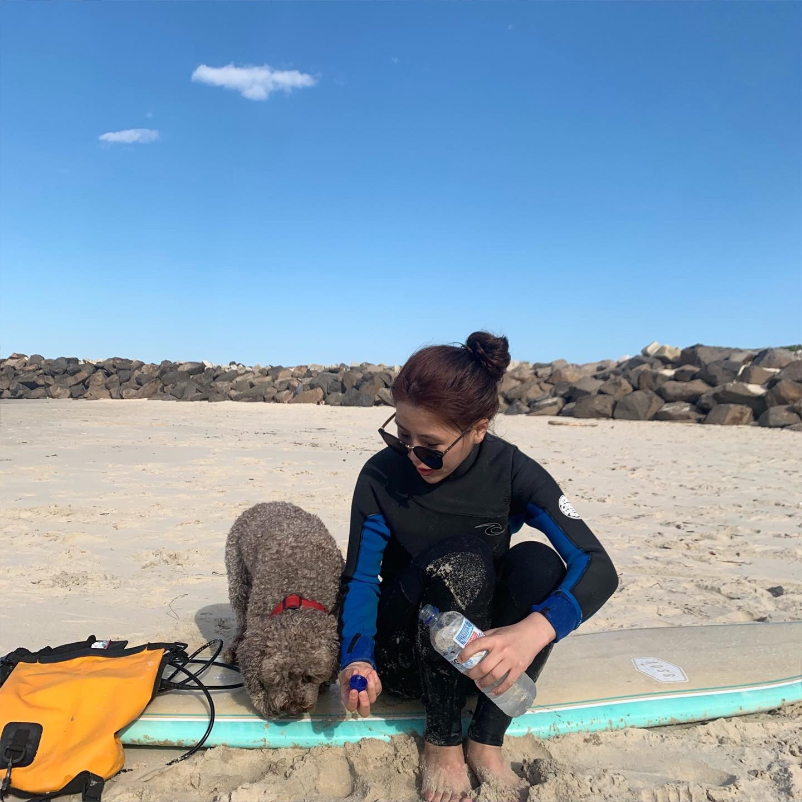
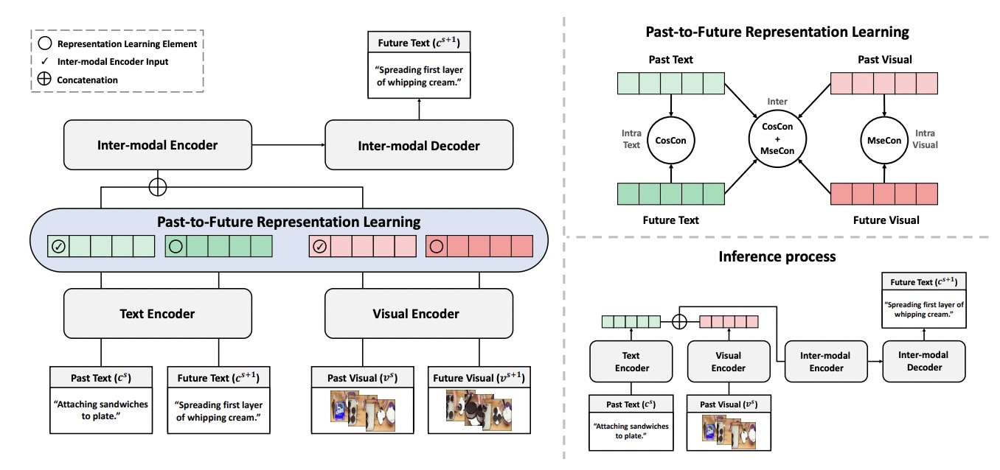
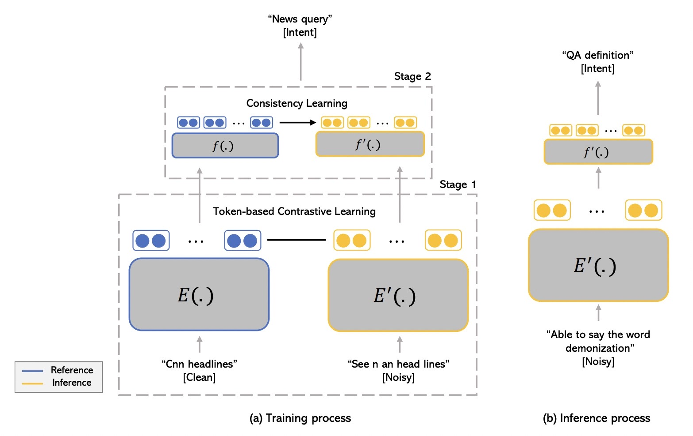

|  |
Suyoung Kim
Department of Artificial Intelligence, Kyungpook National University (KNU) Email: swimaixkxkxk@knu.ac.kr / persistence7388xkxkxk@gmail.com CV, Github |
June. 2024: I will attend NAACL 2024 for my oral presentation. Let's get in touch in Mexico! Mar. 2024: A paper on 'Contrastive and Consistency Learning for Neural Noisy-Channel Model in Spoken Language Understanding' accepted at NAACL 2024 Oral.
Education
Publications Google Scholar *: 1st co-authors, †: corresponding authors, C: conferences, J: journals, W: workshops, P: preprints 2024
|  | [P1] Suyoung Kim, Jiyeon Hwang, Ho-Young Jung†. Multi-modality Based Future Predictive Representation Learning for Video Anticipation Captioningn. Preprint . |
|  | [C1] Suyoung Kim, Jiyeon Hwang, Ho-Young Jung†. Contrastive and Consistency Learning for Neural Noisy-Channel Model in Spoken Language Understanding . North American Chapter of the Association for Computational Linguistics (NAACL Oral) 2024. |
Projects
Awards and Honors